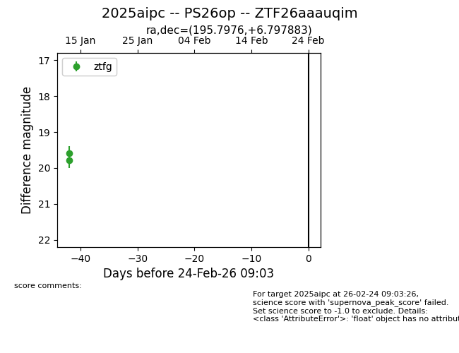
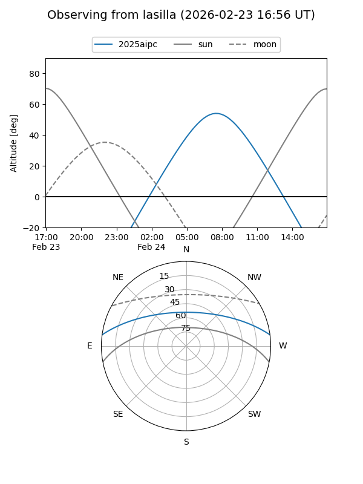
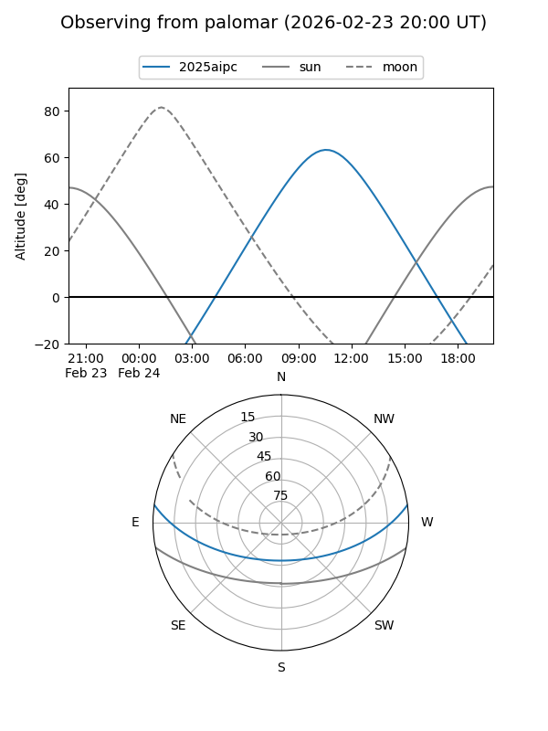

2025aipc
Target 2025aipc at 2026-01-17 14:45
Aliases and brokers:
FINK: link
Lasair: link
ALeRCE: link
TNS: link
YSE: link
alt names
ZTF26aaauqim (ztf,fink_ztf)
2025aipc (tns,yse)
Coordinates:
equatorial (ra, dec) = 195.7976,+6.79788
equatorial (HMS+DMS) = 13:03:11.43,+06:47:52.38
galactic (l, b) = (311.2803,+69.47891)
Flags:
Photometry:
last ztfg=19.59
2 ztfg detections
Lightcurve

Visibility


Additional plots